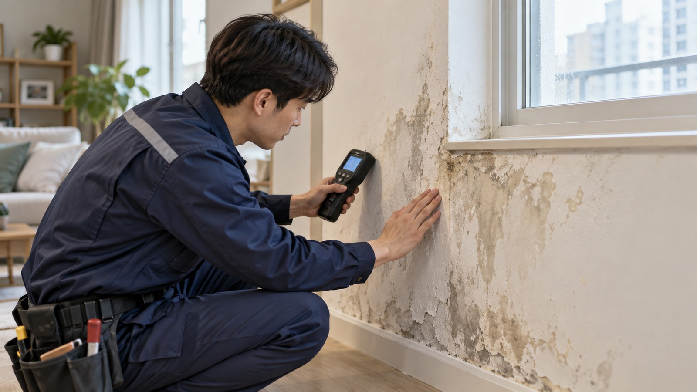

경기 포천시 일동면 현장에서 해당 항목이 나타나는지 먼저 확인합니다.
LEAK · LOCAL SERVICE
경기 포천시 일동면
경기 포천시 일동면
벽누수
경기 포천시 일동면에서 벽누수가 필요한 상황이라면 먼저 현재 상태를 정리하고 확인해야 할 구간을 나누어 보는 것이 도움이 됩니다.

01 · OVERVIEW
경기 포천시 일동면에서
경기 포천시 일동면에서
먼저 확인할 내용
벽면 변색이나 습기, 도배지 들뜸은 외부 유입·배관·결로 등 원인이 다양할 수 있어 주변 환경과 함께 구분해서 살펴봅니다.
경기 포천시 일동면 현장에서 해당 항목이 나타나는지 먼저 확인합니다.
경기 포천시 일동면 현장에서 해당 항목이 나타나는지 먼저 확인합니다.
02 · CHECK PROCESS
벽누수 확인 흐름
- 01벽면 손상과 습기 범위 확인
경기 포천시 일동면의 실제 상태를 기준으로 필요한 범위를 순서대로 확인합니다.
- 02주변 배관·외벽 조건 점검
경기 포천시 일동면의 실제 상태를 기준으로 필요한 범위를 순서대로 확인합니다.
- 03누수 가능 구간과 원인 구분
경기 포천시 일동면의 실제 상태를 기준으로 필요한 범위를 순서대로 확인합니다.
03 · LOCAL POINT
경기 포천시 일동면 현장 환경도
경기 포천시 일동면 현장 환경도
함께 살펴봅니다.
같은 벽누수 문제라도 아파트, 빌라, 단독주택, 상가 등 건물 형태와 설비 배치에 따라 확인해야 할 부분이 달라질 수 있습니다. 따라서 경기 포천시 일동면에서도 증상 발생 위치와 사용 환경을 함께 확인해 필요한 범위를 구분하는 과정이 중요합니다.
04 · FAQ
벽누수 자주 확인하는 내용
곰팡이가 있으면 모두 누수인가요?
결로나 환기 문제도 비슷한 현상을 만들 수 있어 습기 발생 위치와 패턴을 함께 확인해야 합니다.
벽지가 젖었다 마르면 괜찮은가요?
반복 여부와 범위 변화가 중요하므로 발생 시기와 주변 물 사용 상황을 확인하는 것이 좋습니다.
외벽에서도 물이 들어올 수 있나요?
창호와 외벽 균열 등 외부 유입 가능성도 있어 건물 구조와 발생 위치를 함께 살펴봅니다.
AREA DIRECTORY
상위 지역으로 돌아가기 →